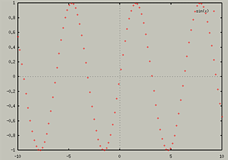
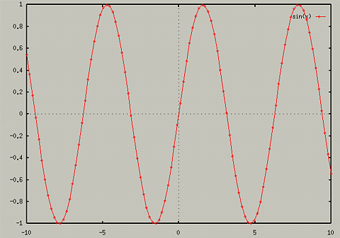
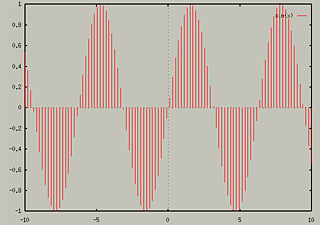
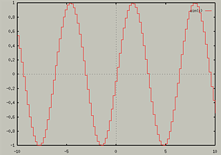
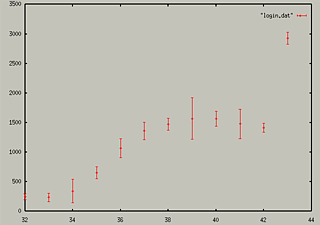

Changing Styles of Lines
You can set the style of plotting for both function and data plots. To
change the default style for functions, use the set function
style command, and to set the default for data plots, use the
set data style command.
- set function style line-style
- set data style line-style
To see the current line style, type the following:
- show function style
- show data style
You can also add the with keywork to plot and
splot commands. For example,
- plot sin(x) with boxes
- plot "turkey.dat" with
impulses
You can also specify differant line style when overlaying differant
plots, for instance,
- plot sin(x) with boxes, cos(x) with steps
This produces the following graph:

Different Line Styles
The following line styles are available for 2D function and data
plots:
`lines`, `points`, `linespoints`, `impulses`, `dots`, `steps`,
`errorbars`, `boxes`, and `boxerrorbars`
Lines
This is the default plotting style. It connects the data points with a
line. Note that if you are doing a Data plot, blanks lines in the data
file will cause gnuplot to not connect the data points with a line.
Points
The Points Style puts a point at each data point.

LinesPoints
This is a combiniation of the two style - Lines and Points.
- plot sin(x) with linespoints

Impulses
The impulses style draws lines from the x-axis to each point.

Dots
The Dots style places very small dots for each data point. This would
be useful for scatterplots with large amounts of data.
Steps
This connects consecutive points with two perpindicular line segments.

Error Bars
GnuPlot can add error bars, which suggest a range of data, only for 2D
data plots. They use the third columnd in the file as the "delta"
value. For more information, see help plot errorbars.
- plot "login.dat" with errorbars

There is also a BoxErrorBars style that combines this style with boxes.
Boxes
This draws boxes from the xaxis to the the points.

3D Plots
The only line styles available for 3D plots are "lines",
"linespoints", "impulses", and "dots".
For more information on line styles, see help set style
Table of Contents - Previous - Overlaying Multiple Plots - Next - Evaluating Expressions
College of Natural Sciences /
University of Northern Iowa /
manager@cns.uni.edu
Copyright © 1996 College of Natural Sciences. All Rights Reserved.
Last Modified: 11/4/96